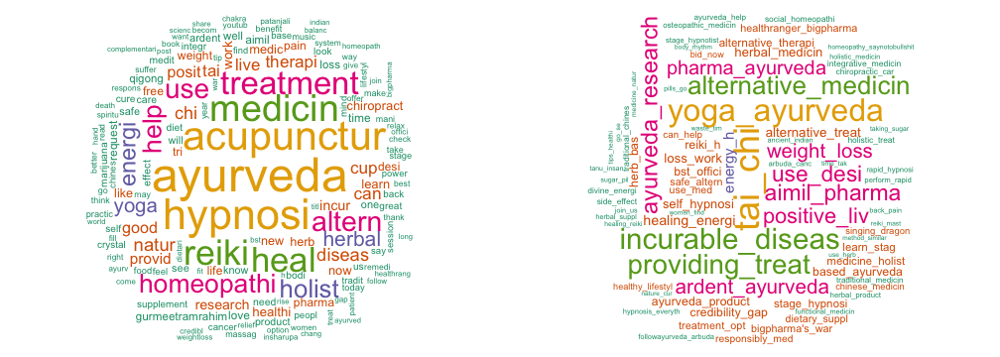
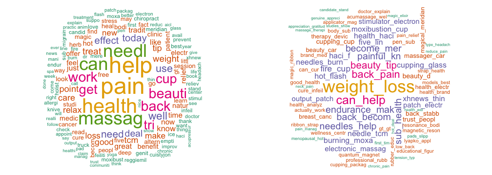

- Chronic diseases cause 70% of all deaths worldwide and 88% deaths in USA.
- Conventional medicine can treat the symptoms but not cure a chronic disease; treating people with chronic diseases account for 86% of health care costs in US.
- Healthcare reform from disease control to preventative and personalized care.
- Strategic plans of World Health Organization (WHO) and US government to integrate orthodox medicine with alternative approaches to health and wellness.
- 33% American adults use complementary, alternative, and integrative (CAI) approaches to health and wellness.
- Prompt analysis of real-time real-world use of and attitudes toward CAI approaches can help decision-making in healthcare reform and determining potential market value of CAI approaches.
Real World Insights into Complementary, Alternative, and Integrative Health Approaches
A Twitter Text Minding Study
Zhen Wang
Albert Einstein College of Medicine
Motivation
Twitter Provides Real-time Real-world Insights
CAI Uses Reflected by Tweets on April 21, 2016
- 70 search keywords were defined based on examples given by the White House.
- Nutrition, yoga, massage, and meditation are the 4 most frequently tweeted CAI approaches.
- When those keywords are disabled, ayurveda, hypnosis, and acupuncture appear to be the top approaches.
- Other top approaches include reiki, homeopathy, herbal medicine, tai chi.

CAI Approaches Are Used Everywhere in the World

CAI Approaches Are Used throughout USA

What do people use Acupuncture for? How do they use it? What do they think about it?
- People use acupuncture for weight loss, back pain, hot flash, breast cancer.
- People use various types of acupuncture including needle, massage, cupping, moxibustion, and electro-acupuncture.
- Positive opinions as indicated by "can help", "great", "like", "magic"...

Overall Positive Feelings About CAI and Acupuncture
- Sentiment score based on NRC Word-Emotion Association Lexicon.
- Mixed feelings, overall positive...
- Deeper text mining can identify more specific contexts for the positive and negative sentiment, respectively.


Conclusions and Future Work
- People are tweeting about CAI approaches all over the world, and throughout USA.
- Acupuncture is among the most commonly used CAI approach:
- People use acupuncture for weight loss, pain relief, hot flash, breast cancer.
- People use various types of acupuncture including needle, massage, cupping, moxibust, and electronic acupuncture.
- Some of my discoveries agree with the two most recent National Health Survey Data in 2007 and 2012, but the twitter analysis is real time.
- Future work:
- Conduct the topic mining for other CAI approaches;
- Try more robust method for sentiment analysis.
- Deploy an App on ShinyApps.io or Heroku.